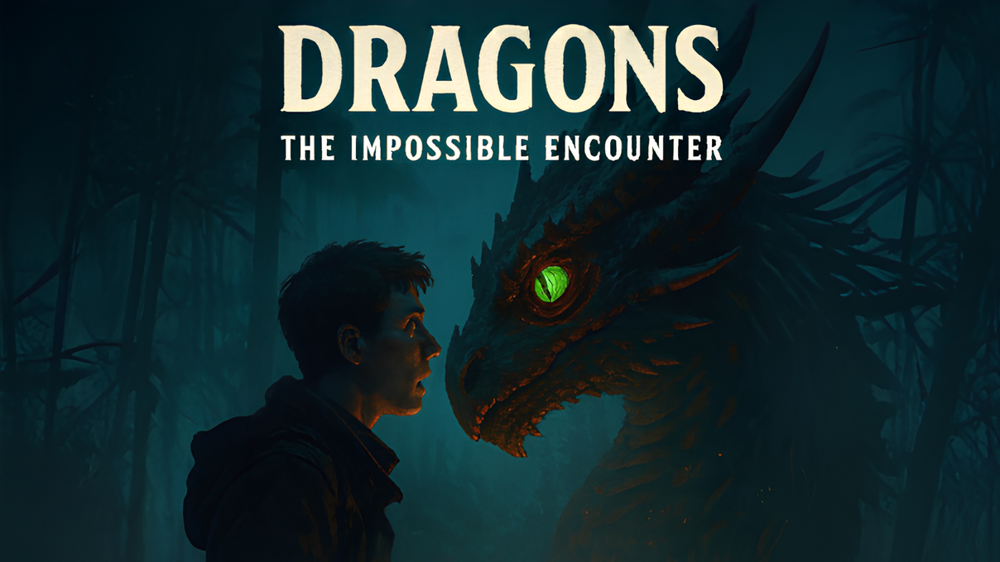
Добро пожаловать на сайт игры Dragons: the Impossible Meetting!
Он был создан для удобства нахождения информации об этом проекте.
Здесь вы можете следить за всеми новостями проекта, скачать игру, узнать больше о ней, связаться с её разработчиком и помочь развитию этого проекта.
Этот проект был создан инди-разработчиком в качестве замены замороженного проекта другого разработчика (Dragons of the Edge). Так как по известным мне причинам тот проект не будет развиваться дальше, мною было принято решение начать работу над своим.
Пока что данная игра находится на стадии альфа-тестирования и я был бы очень признателен за любую помощь.
Основная задумка игры — геймплей за всем известного Беззубика (ночную фурию) из франшизы «Как Приручить Дракона».
Дополнительная цель — добавление сюжетной линии.
Несколько основных механик уже реализовано, сюжет сочиняется.
V0.0.2.5.1 - Разрабатывается механика урона, дорабатывается главное меню
Вы можете помочь проекту своими знаниями, умениями, поддержкой или материально.
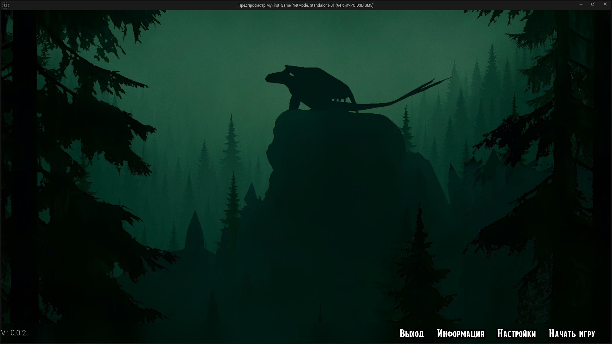
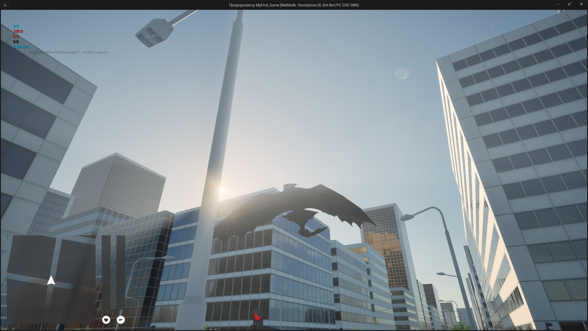
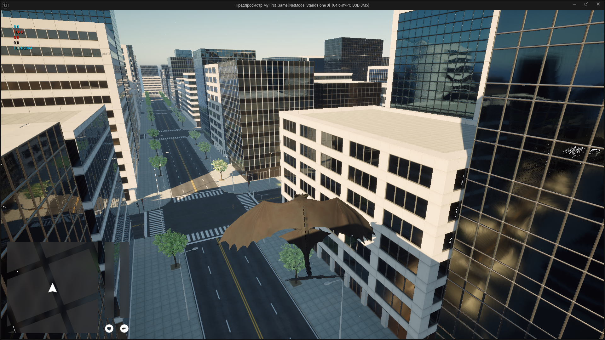
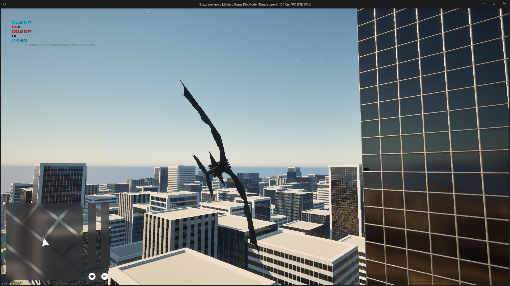
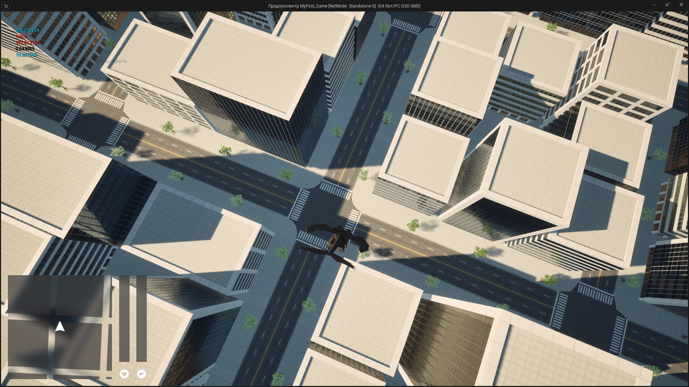
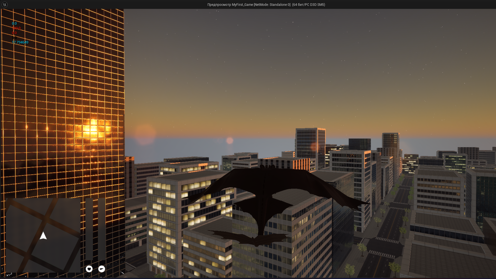
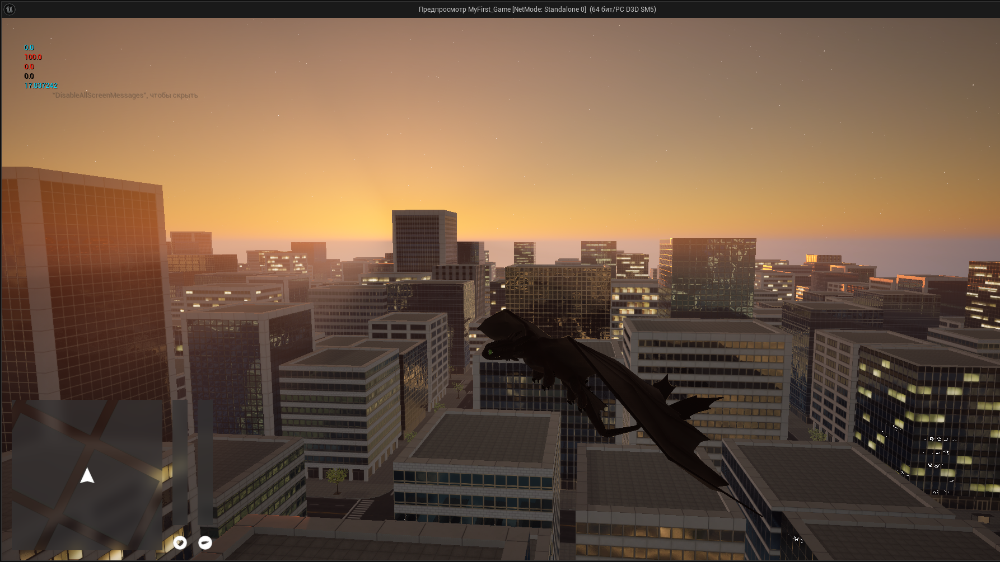
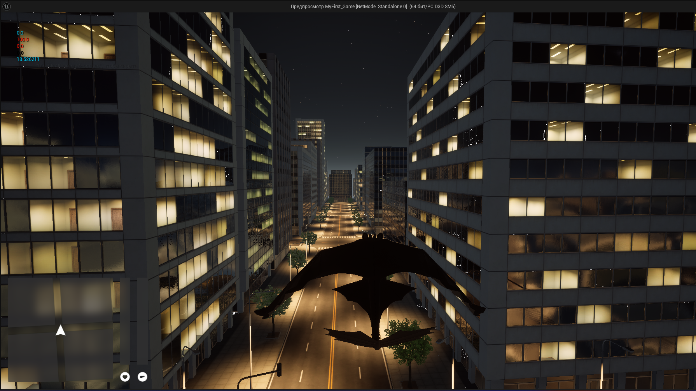
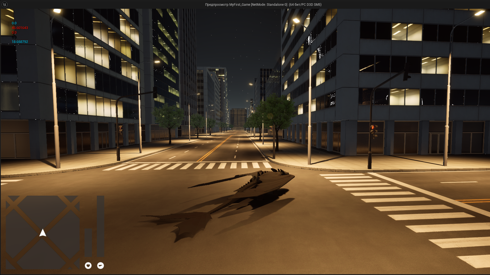
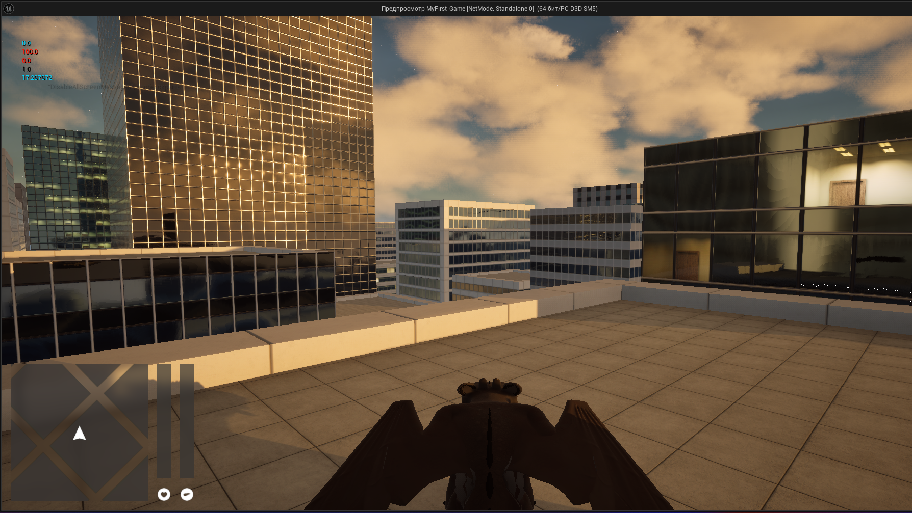
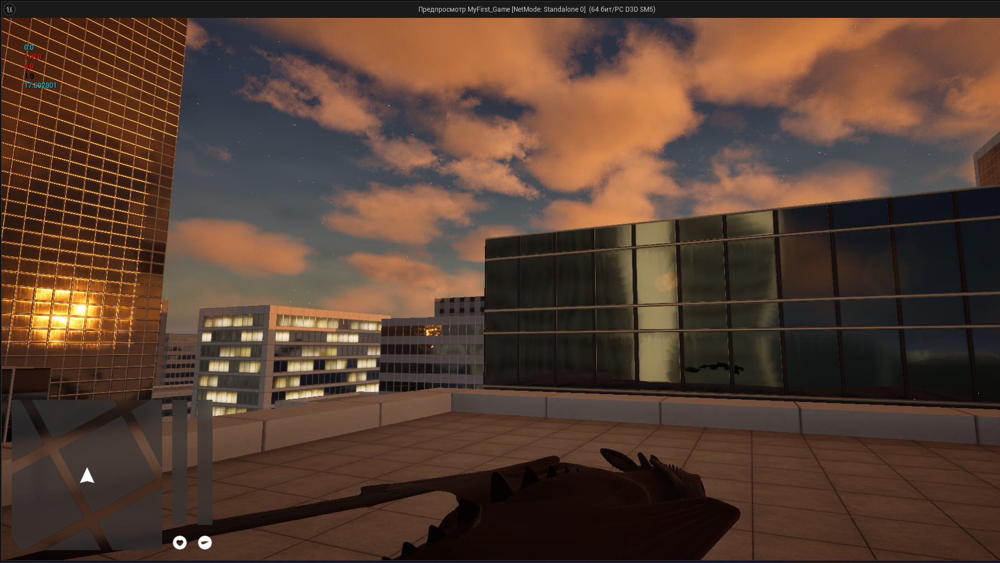
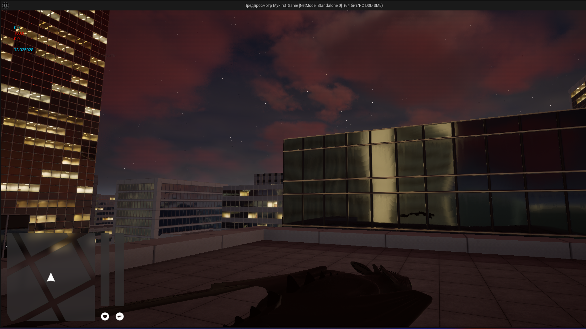
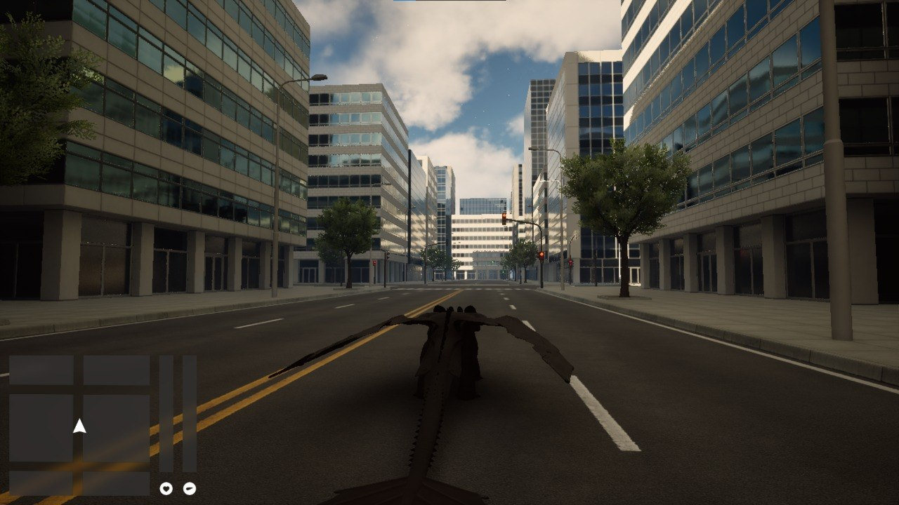
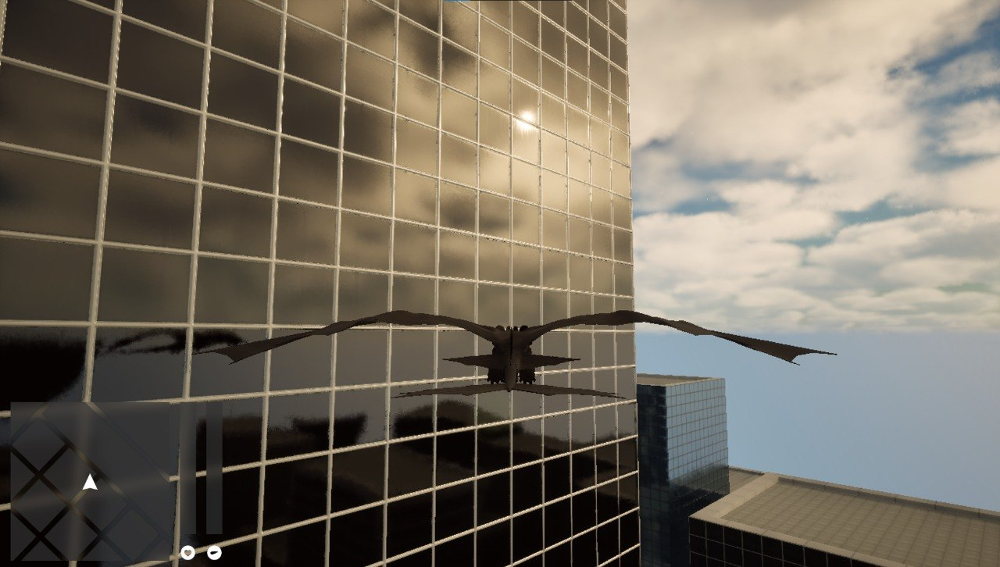
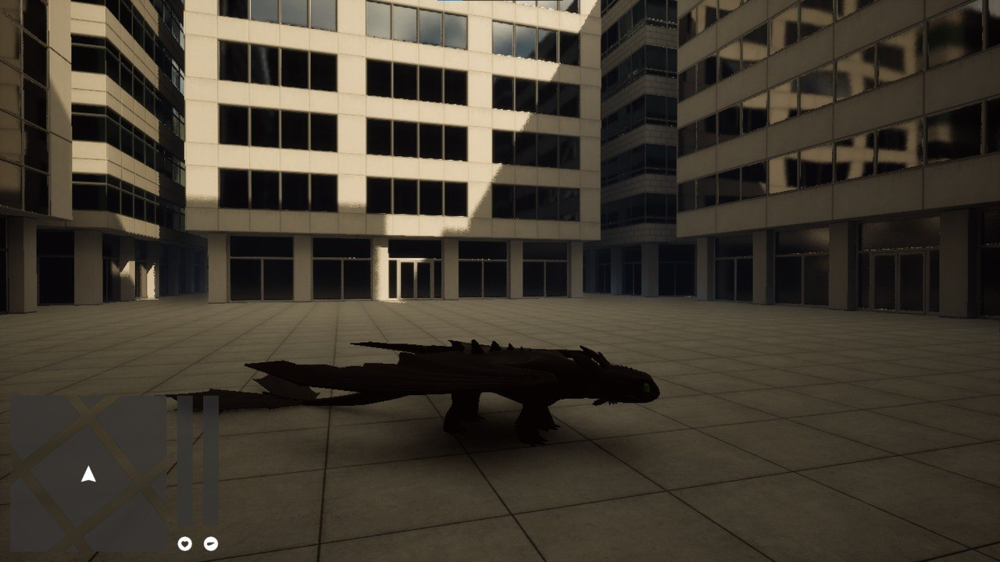
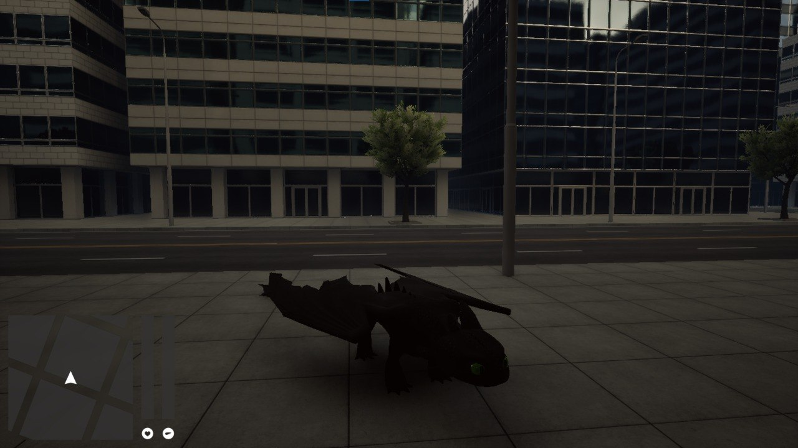
Dragons: the Impossible Meetting
«Dragons: the Impossible Meeting» — это неофициальный проект, разрабатываемый фанатами. Все права на франшизу «Как Приручить Дракона» принадлежат студии DreamWorks Animation.
 DtIM
DtIM